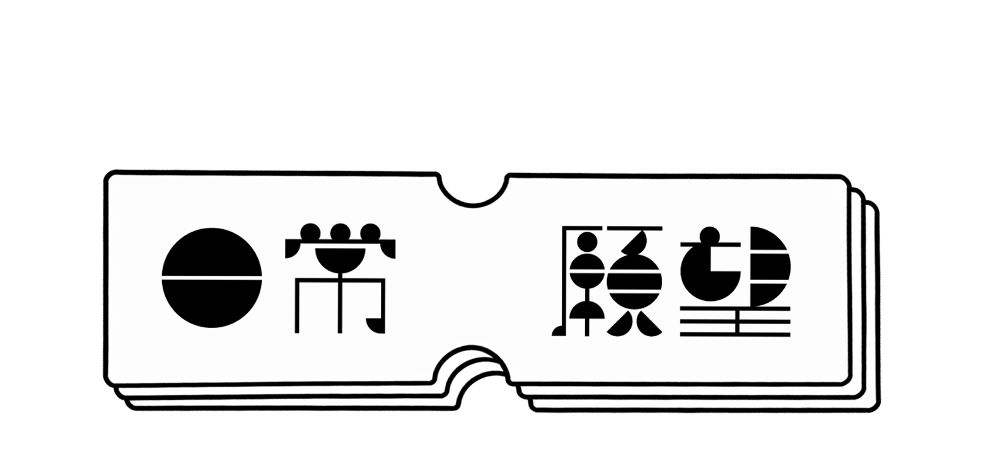

Slice of Life Wishes
A bit of my culture — to wish you well through the hardships of daily life and as a reminder to cherish small moments.
Cantonese is a withering diaspora that is slowly fading away.
To me, it also reflects a part of my identity, childhood, and relationship with my parents, which
are
becoming lost as I approach the broader modern world, a world in which a new collective Chinese
image is becoming dominant.
This project is a homage from a descendant to the complex and convoluted relationship
that help Cantonese endure as the old but colorful language and culture...
And to the Yue Chinese ancestors in San Francisco, who paved the way for many future generations and are now being forgotten by time.
